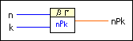
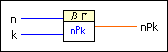

Permute VI
Owning Palette: Discrete Math VIs
Requires: Full Development System
Computes the number of ways to obtain an ordered subset of k elements from a set of n elements.

 Add to the block diagram Add to the block diagram |
 Find on the palette Find on the palette |
Owning Palette: Discrete Math VIs
Requires: Full Development System
Computes the number of ways to obtain an ordered subset of k elements from a set of n elements.

| Add to the block diagram |
Find on the palette |